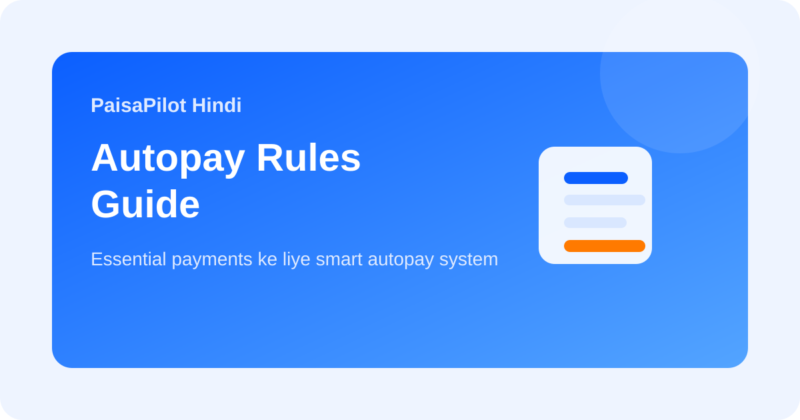

Autopay Rules Guide: kab use karein aur kab manual control rakhein
Last updated: March 30, 2026

Autopay convenience deta hai, lekin bina rules ke use kiya jaye to forgotten renewals, failed debits, aur unnecessary payments ka source bhi ban sakta hai. Best system ye hai ki autopay selective ho, universal nahi.
Quick Answer
Autopay un payments ke liye use karo jo essential aur predictable hon. Variable bills, trials, aur low-value subscriptions ke liye manual review better hota hai. Smart autopay ka matlab selective autopay hai.
Kahan autopay useful hai
- loan EMI
- important insurance premium
- stable utility bills
- disciplined investment amounts
Kahan manual control better hai
- trial subscriptions
- OTT ya entertainment plans
- variable card bills
- occasionally used online services
Autopay Checklist
| Question | Why it matters |
|---|---|
| Kya payment essential hai? | Essential payments ko automation zyada suit karta hai. |
| Kya amount stable hai? | Variable debits review demand karte hain. |
| Kya main ise aaj bhi willingly pay karta? | Lazy renewals pakadta hai. |
| Kya linked account me buffer hai? | Failed debit stress aur penalty kam hoti hai. |
Common Mistakes
- Checkout par bina soche autopay on kar dena.
- Same account me sab spending aur autopay mix kar dena.
- Service band hone ke baad autopay cancel na karna.
- Statements review na karna.
Related Guides
Subscription Audit Checklist, Bank Statement Review, Loan EMI Planning
Editorial Note: Educational information only; actual autopay settings bank aur app ke hisaab se alag ho sakti hain.